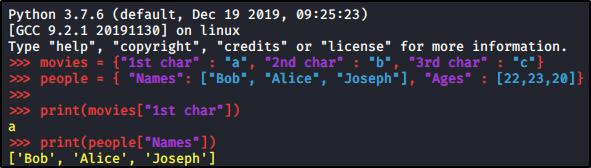
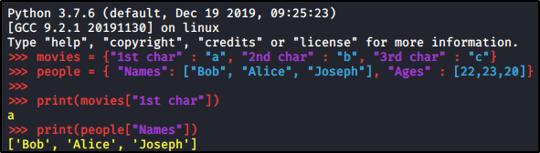

Dictionaries in Python
Dictionary Definition:
A List of Key/Value pair: you can find values by key. Start and end with CURLY BRACES
Remember: every object (Integer, Boolean, String etc.) can be a Key or a Value
Dictionary Syntax:
a_dictionary = { “Key 1” : value_1, “Key 2” : value_2 ...}
Example:
 

Print the whole dictionary:
print(people) # Print the whole Dictionary with Key/Value couples
Add a new Key/Value couple:
people["Jobs"] = ["Programmer, “Nurse”, "Lawyer"] # Add a new key “Jobs” with 3 values
people.update({"Hobbies" : “Gold”, “Gym”, “Books”}) # Add a new key “Hobbies” with 3 values (BETTER)
Print a single entry:
print(people["Names"]) # Print the value associated with the key “Names” (["Bob", “Alice”, “Joseph”])
print(people.get("Names") # Printe the value of “Names”, else print “None” if the key doesn't exist (BETTER)